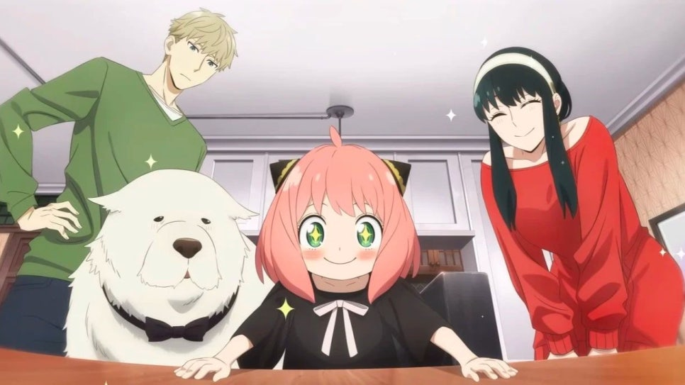

About Anya
아냐 포저는 인기 애니메이션 '스파이 패밀리'의 주인공 중 한 명으로, 타인의 마음을 읽을 수 있는 텔레파시 능력자입니다. 과거 어느 조직의 실험체였으나 수용소를 탈출하여 고아원에 머물던 중, 스파이 '황혼(로이드)'에게 입양되어 포저 가문의 딸이 되었습니다. 귀여운 외모와 독특한 말투, 그리고 상황을 오해해서 생기는 엉뚱한 표정들이 매력 포인트입니다.

아냐의 가족은 세계의 평화를 지키기 위해 모인 조금 특별한 가짜 가족입니다.
Anya's characteristic
- 마음을 읽는 초능력: 상대방의 생각을 읽을 수 있지만, 본인이 초능력자라는 사실은 비밀로 유지하고 있습니다.
- 와쿠와쿠(Waku Waku): 흥미진진한 상황이나 스파이 임무 같은 일을 마주하면 눈을 반짝이며 "와쿠와쿠!"라고 외칩니다.
- 땅콩 사랑: 세상에서 땅콩을 제일 좋아하며, 공부하는 것은 아주 싫어합니다.
- 독특한 표정: 특히 상대방을 비웃는 듯한 '헤헷(Heh)' 표정은 아냐를 상징하는 밈(Meme)이 되기도 했습니다.
Anya's family
아냐는 자신의 능력을 통해 아빠가 스파이이고 엄마가 암살자라는 사실을 알지만, 가족을 지키기 위해 이를 모르는 척하며 학교생활에 분투 중입니다.
- 로이드
- 요르
- 본드